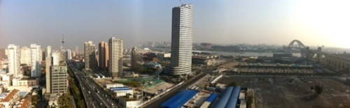

Wed, 10 Aug 2011 21:09:00 · Shanghai · china · life · wanderlust
10 Things I (Will) Miss About Living in Shanghai

These are some (personal) random list of things that made my life in Shanghai comfortable and, at certain points, even very much enjoyable. Despite the fact that sometimes one has to (ahem) have a wee bit deeper pocket to enjoy certain privileges, I still find them worth every penny. All the good things about Shanghai certainly outweigh all the day-to-day silliness that one has to put up with from time to time. Well, what can I say, no place is perfect. Surprisingly enough, it wasn’t easy for me to simply condensed a 6+ years period of living in Shanghai down to mere ten things. I need to left out a lot of things, so feel free to add your two cents if you want. For what it’s worth, here’s my own list of what I (would) miss about living in Shanghai.
**Disclaimer: I understand that these lists might be seen as very 外国人-centric and therefore a bit myopic (and shallow), but I couldn’t help it and I will not apologize for it. Some of them are simple things that I found comforting and at times reminded me of home (read: food for picky people like me).
See here for the complete list…